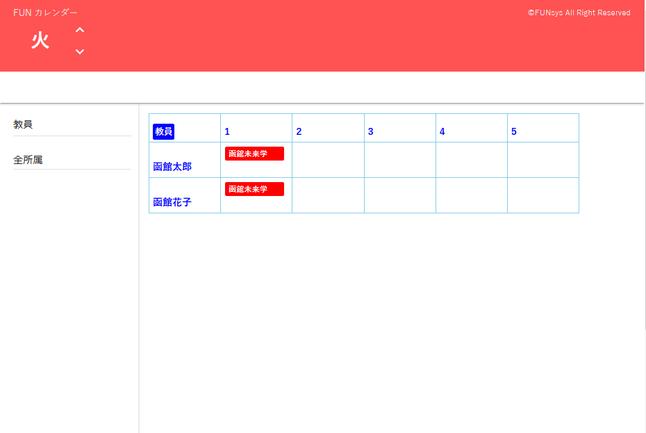

未来大生開発者を
支援するAPIと
サンプルアプリの
開発
FUNsysチーム
FUNsysチームについて
発足：2017年4月
特徴：開発経験が少ない1・2年生が
過半数を占めている
背景
未来大学は情報系の大学
→ アプリ開発をしている学生が存在する
未来大のデータを扱ってアプリ開発をしたいというニーズが存在する
現状
未来大のデータ（時間割やシラバス等）を
入手するには、
PDFやHTMLを解析する等の方法
しかない
コンセプト
未来大にあるデータの
アクセサビリティを向上させる
自発的にアプリ開発を行う、
未来大生開発者向けのサポートを行う
既存のデータを組み合わせて新しい価値を創造する
FUN-API
未来大のデータを提供するWeb API
現在は
時間割・教員情報・教室情報を提供
JSON形式で取得する事が出来る
サンプルアプリ
FUN-APIを使った、未来大生の為の
時間割アプリ
空き教室情報の確認や
教員の講義情報の確認が出来る
